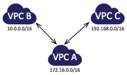
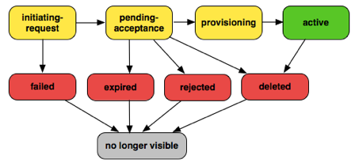
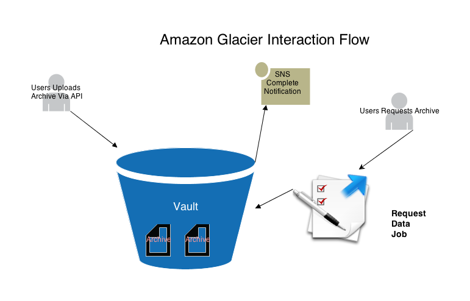

Deploying, Scaling, and Running Grails on AWS and VPC
Created by Ryan Vanderwerf / @RyanVanderwerf
About Me
- Chief Architect @ ReachForce
- Co-Chair Austin Groovy and Grails User Group
- Co-author of 'Effective Gradle Implementation' Video Series on Packt
- Heavily into DevOps as of late
- Also check out my other talks 'Getting Groovy with Lego Mindstorms EV3'
- ..and getting Groovy and Google Glass and Android Wear!
What We Will Cover
- What is a VPC?
- S3 Storage Service
- ElasticWolf
- sshoogr and gramazon - Basis for Groovy-based Ansible?
- Grails Plugins (Grails 2.x and 3 what works)
- Elastic Load Balancers
- Autoscaling
- Others misc tips
VPC - Virtual Private Cloud
- Proper Architecture (Go Multi-AZ!)
- Routing
- NAT
- ACL Firewall
- Suggested Subnets
- Security Groups
- DHCP Tips
- VPC Flow Logs
- S3 Endpoints
- VPC Peering
- ClassicLink - Lin
- Others misc tips
VPC Overview
- Now required on new AWS accounts
- Very different that EC2 'Classic' which has no private network layer
- Costs nothing extra - you have nothing to lose
VPC - Routing/Subnets

VPC - Routing/Subnets

VPC - Routing/Subnets
adding a 3rd subnet - this gives a helping hand
- auto-scaling instances can access internet through NAT
- Web Servers, Web facing apps can live behind ELB yet be able to run OS updates
- S3 Buckets accessible
- can access your secure subnet as well
VPC - Routing/Subnets - Redundancy

VPC - Routing/Subnets - Redundancy
Now you can add subnets each on a different AZ - You can be 3 9's!
- Create 4 subnets - 2 DMZ's across 2 AZ & 2 secure subnets across AZs too!
- Web Servers, Web facing apps can live behind ELB yet be able to run OS updates
- S3 Buckets accessible
- Can access your secure subnet as well
- Use Route53 Health Checks to failover to backup Region or S3 Static site
- Also can use VPC Peering (Doesn't work across regions though!)
VPC - Routing/Subnets

VPC - Routing/Subnets

VPC - Routing/Subnets

VPC - Routing/Subnets

VPC - Routing/Subnets
Security ACLs
- ACLs like a full firewall - unlike groups
- Protect subnets instead of EC2 instances
- Processed in order of rule #
- ACLs are stateless - responses to inbound bound by outbound rules
- To accommodate various clients and OSs open ephemeral ports 1024-65535 then block malicous ports
VPC - Routing/Subnets
Security Groups
- VPC Security Groups are different than EC2 Groups - use different and descriptive names if both used
- You can use a security group ID (starting with sgXXXXX) in most places where IPs can be entered
- Processed in order of rule #
- ACLs are stateless - responses to inbound bound by outbound rules
- To accommodate various clients and OSs open ephemeral ports 1024-65535 then block malicous ports
VPC - Routing/Subnets
DHCP Options
- Determine What DNS DHCP clients use
- Can do things like set default domain, whether to use internal or external DNS for your VPC
- From Web UI, assign only 1 option set at a time
- Using amazon provided DNS, using naming scheme of 10.0.1.x, default domain ec2.internal
- Can assign your own DNS server names, or even Netbios name servers or NTP servers
- Options are semicolor delimited name value pairs, i.e. 'domain-name=something.com; domain-name-severs=AmazonProvidedDNSs
VPC - Flow Logs
Flow Logs - monitor your traffic!
- Log your VPC Traffic into Cloudwatch Logs
- Pay $.50/GiB to injest logs, $0.03/GiB to archive them
- Cannot log Amazon DNS traffic, Windows License Activation, DHCP traffic
- New as of June 2015 - AWS Partners working on tools
- Can be used for a more complete IDS solution vs simple proxy or host based
- You may need this for security compliance
VPC - Flow Logs
Flow Logs - monitor your traffic!
Let's take a look at a real one
VPC - Peering
Peering - Link VPCs Together
- Link VPCs together across AZs
- Cannot peer in between regions
- Can link VPCs across accounts
- Must not have overlapping CIDR blocks
- Can be used with Placement groups with some limitations
- Private DNS and Security Groups do not work between peers
VPC - Peering
(From AWS Docs)
VPC - Peering Lifecycle
(From AWS Docs)
VPC - S3 Endpoints
S3 Endpoints - Speed Up S3 Access!
- Easy to add - if you are not doing this you should!
- Works with some AWS servicse like Elastic Beanstalk, Opsworks, etc with limits
- Uses IAM policies to control access
- Now S3 traffic doesn't leave AWS network - huge boost!
VPC - IAM Roles
- Don't use root account anymore. Traditional security page is retired
- Use MFA Authentication device for all IAM users on console - hardware or phone app
- Set up your IAM roles for each user and use designated login url they give you
- Use resource level security with IAM to tier access to instances/resources
VPC - Misc EC2 Tips
- Reboot != Stop be careful
- Rebooting a machine from console will keep instance in place and ephemeral storage(OS reboot faster)
- If you issue an 'stop' command you machine will move and lose ephemeral state
VPC - Misc EC2 Tips
- VPN
- Use OpenVPN instead of metered AWS VPN - it runs fine on a tiny instance- save $$
- Use OpenVPN client to leave remote servers connected to VPC - it auto-reconnects
VPC - Misc EC2 Tips - Elastic Load Balancer
- Create internal ELB's inside your vpc for microservices
- Limit 3600s timeout on idle max now
- Can now use sticky source IP with HTTPS!
- Use Haproxy for anything very advanced, can accommodate many options
VPC - Misc EC2 Tips
- EBS Based Instances
- Use EBS backed instances for anything not build for cloud
- If you can build server on the fly with Chef/Puppet like tools, go for ephemeral based
- EBS backed instances have no swap by default - be sure to specify ephemeral disks on launch, use as swap
- EBS backed instances have no ephemeral disks on by default be sure to use them on launch of instance and AMIs
S3 Storage
- Limitations
- Common tools
- Regions with different functionality
- Glacier
- Grails S3 Plugin
S3 Storage
- This means after write/update it will EVENTUALLY be consistent
- Make your app retry on read fail - it might not be synced yet
- Different regions have different consistency rules
- US-West and EU Buckets have read after write consistency - but not update or delete (and cost more)
- US-East is so large it cannot handle any kind of consistency after write/update/delete - except patience!
Limitations - Eventual Consistency
S3 Storage
- Files over 5GB supported, but most tools don't handle properly
- S3 Tools must support mime/multipart
- s3cmd(Linux) / CyberDuck 4(Mac/Win32) / S3 Browser(Win32) / Cloudberry Explorer(PRO Win32) / Bucket Explorer
- File > 5GB files work with these tools, it is EXTREMELY slow
Limitations - large files
S3 Storage
- s3fs - mount as filesystem - but >5GB files broken, beware of consistency!
- Make sure FUSE is in kernel
- s3cmd is best free command line tools
- Bucket Explorer & CloudBerry Backup are good solid windows clients that parallelize multi-part uploads to ease the pain
- s3 Browser is ok free tool
- For s3fs install on Ubuntu: http://zentraal.com/docs/installing-s3fs-on-ubuntu/
Tools
S3 Storage
- US-East-1 Cheapest for full redundancy otherwise to save $ you can use RRS (Or Glacier)
- US-West and EU Buckets have read after write consistency - but not update or delete (and cost more)
- US-East is so large it cannot handle any kind of consistency after write/update/delete - except patience!
- Barring these limitations (and budget!), use the region closed to your VPC instances and regions
Different Function Between Different Regions
S3 Storage
Grails S3 Plugin
- No longer maintained - doesn't work with Grails 2.2.x or 3.x
- Source repo was on codehaus and never moved to github
- Uploads and catalogs assets (will use bucket name you give as base for its bucket name)
- Names files inside bucket with UUIDs to avoid collisions
- Can give each asset a bucket and key pair or global
General AWS Grails Plugins
- Grails AWS Plugin
- AWS SDK Plugin
- DynamoDB GORM Plugin - not covered
- Amazon Flexible Payments - not covered
- SimpleDB GORM Plugin - not convered
- CDN Asset Pipeline plugin - not covered
General AWS Grails Plugins Continued
- AWS App Config Plugin - Store version info in DynamoDB
- Elastic Beanstalk Plugin - help launch on EB
- AWS Instance - Cognito/CloutWatch/SES/SQS/IAM clients
- AWS User-Org - Dynamo DB for User/Group strucutres
- Karman Plugin - Cloud File Karman library plugin
General AWS Grails Plugins - Grails AWS Plugin
Actual Groovy/Grails Code to Manage S3 storage and SES Service (vs Java wrapper)
- Still maintained as of May 2015 (Grails 2.x though) - cool wrapper for S3 stuff like torrents also SES
- Nifty wrapper for S3 stuff like torrents, public urls
General AWS Grails Plugins - Grails AWS Plugin
Has handy Gant scripts installed - used for SES stats
- Aws-Ses-Get-Send-Quota
- Aws-Sws-Get-Send-Statistics
- Aws-Ses-List-Verified-Emails
- Aws-Ses-Send-Ping-Mail
- Aws-Ses-Verify-Email
General AWS Grails Plugins - Grails AWS Plugin
Aws-Ses-Get-Send-Quota
- Gets your current Quota for Simple Email Service
- Shows email limit per day, per second, # of emails
- Output looks like this:
[AWS SES] The maximum number of emails the user is allowed to send in a 24-hour interval: 10000.0
[AWS SES] The maximum number of emails the user is allowed to send per second: 5.0
[AWS SES] The number of emails sent during the previous 24 hours: 15.0
General AWS Grails Plugins - Grails AWS Plugin
Aws-Sws-Get-Send-Statistics
- Gets your email sending statistics
- The output is a list of items, for the last two weeks of sending activity.
- Example output:
[AWS SES] -------------------------------------------------------------------------------
[AWS SES] | time range | attemps | rejects (SES) | complaints (recipient) | bounces |
[AWS SES] |-------------------------------------------------------------------------------|
[AWS SES] | 2013/06/26 22:42 | 1 | 0 | 0 | 0 |
General AWS Grails Plugins - Grails AWS Plugin
aws-ses-list-verified-emails
- Shows a list of all verified emails with
- The output is a list of emails authorized to send email FROM
- Example output:
[AWS SES] 1) support@reachforce.com
General AWS Grails Plugins - Grails AWS Plugin
aws-ses-send-ping-mail
- Script will verify a given email has been 'verified' by Amazon
General AWS Grails Plugins - Grails AWS Plugin
aws-ses-verify-email
- Script will submit an email for verification to amazon, and send an email to that address
General AWS Grails Plugins - Grails AWS Plugin
S3 File Management
- Handy for storing existing assets into S3
-
Convert local File to S3 Storage
def s3file = new File("/tmp/test.txt").s3upload { path "folder/to/my/file/" } -
Upload directly from Stream:
def file = request.getFile('photo') def uploadedFile = file.inputStream.s3upload(file.originalFilename) { bucket "file-upload-from-inputstream" }
General AWS Grails Plugins - Grails AWS Plugin
SES Management
- AFAIK skip this - the mail plugin handles all of this
- // settings for mail plugin to work with SES grails { mail { host = "email-smtp.us-east-1.amazonaws.com" port = 25 username = "SESUsername" password = "SESPassword" props = ["mail.smtp.starttls.enable":"true", "mail.smtp.port":"587","mail.debug":"true","mail.smtp.auth":"true"] // uncomment to force all emails to one address // grails.mail.overrideAddress="test@address.com" grails.mail.default.from = "support@reachforce.com" } }
General AWS Grails Plugins - AWS SDK Plugin
- Wrapper for AWS Java SDK
- This is the one to use for most powerful work of services - can access almost all of AWS services that JDK supports
- Uses AWS Web Service API wrapped in a Java Library
- Error handing can be more difficult than using web service api directly
- Works with Grails 3, yay! https://github.com/agorapulse/grails-aws-sdk/tree/grails3
General AWS Grails Plugins - AWS SDK Plugin
Grails 3 AWS SDK Demo
General AWS Grails Plugins - AWS SDK Plugin
Services Supported
- EC2 - ELB,CloudWatch, Elastic Beanstalk
- RDS - Elastic Mapreduce, SDB, Dynamo, Redshift, SimpleDB
- S3/Glacier
- SES (us-east-1,us-west-2,eu-west-1 only)
- SQS, SWF
- CloudFormation,CloudFront
- Elastic Beanstalk, Transcoder, Opsworks(Old Chef)
- Cloudformation, CloudSearch, Elasticache
General AWS Grails Plugins - AWS SDK Plugin
EC2
- Grails service wrapper is 'amazonWebService'
- Call amazonWebService.ec2. - for default region, call amazonWebService.getEc2('region'). for others
- RunInstancesRequest class defines parameters to launch an instance (It seems picky about nulls)
- use amazonWebService.runInstances() to start instances
- Complete docs at: http://docs.aws.amazon.com/AWSJavaSDK/latest/javadoc/
General AWS Grails Plugins - AWS SDK Plugin
RDS
- Not sure why you would spin up entire databases, but you can!
- Most practical use would be to automate snapshots of the database
- If you have a small simple database, service is good
- Cannot start/top RDS instances, and pay premium to use their licenses if using commercial DBs
- Most DB's support 4-6TB disk now, my opinion has changed on RDS
- Has good multi-az failover (but pricey!) with PIOPS EBS Volumes (You can raid your own PIOPS drives!)
General AWS Grails Plugins - AWS SDK Plugin
S3
- manage buckets, upload/download and delete files
- Transfer Manager - handles multipart uploads (big files, batch, fast!)
- full docs here: http://docs.aws.amazon.com/AWSJavaSDK/latest/javadoc/com/amazonaws/services/s3/package-summary.html
General AWS Grails Plugins - AWS SDK Plugin
Glacier
- cold storage for data - not immediately available on demand
- vaults - organize your archives and policies (where your files go)
- Upload files via amazonWebService.glacier.uploadArchive(UploadArchiveRequest uploadArchiveRequest) or UploadMultiPart
- Files are retrieved via 'initiateJob'
- Call 'listJobs' until your job is done.
- Can use Amazon SNS to notify you when jobs are complete
- When done get files from your vault via GetJobOutput
General AWS Grails Plugins - AWS SDK Plugin
Glacier
General AWS Grails Plugins - AWS SDK Plugin
SQS
- Simple queue service
- Create / Delete Queues
- Receive Message
- Can also assign permissions and batch messages
- Messages can remain in queue for 12 hours
ElasticWolf
- More powerful than web console gui
- Can control things like auto-scaling
- Created partly for new GovCloud because they had no UI at all initially
- Managed by sales organization instead of IT
- Actively Maintained on Github
ElasticWolf
- Demo
sshoogr
- sshoogr - Groovy-based DSL library for working with remote servers through SSH - DSL Allows:
- connecting
- executing remote commands
- copying files and directories
- creating tunnels in a simple and concise way
- gradle plugin also for
- project very active
- sshoogr+gradle+DSL == Groovy Based Ansible???
Repos for these: https://github.com/aestasit/sshoogr and https://github.com/aestasit/gramazon-gradle
gramazon
- gramazon - Groovy based API for Amazon EC2
- interface library that can be used to interact with the Amazon EC2 system and control server resources on demand from your Groovy scripts or from Gradle, using a plug-in.>
- uses gradle to run commands
- maybe could be used as basis for a groovy version of chef or puppet?
- project also very active
- gradle project template available as well as 'gradle-ssh-plugin'
Repos for these: https://github.com/aestasit/sshoogr and https://github.com/aestasit/gramazon-gradle
Autoscaling Overview
- Autoscaling can be used for fault-tolernance (min 1)
- Most efficient user of instance
- Set Policies using templates for how more servers created/terminated
- Control Spot instance bit price
- You app must be able to handle 'sudden death'
- Make sure your debug your AMI BEFORE adding to a autoscale group (debugging failed autoscaled instances is no way to go through life son!)
Autoscaling Setup
- Step 1: Create Launch Config(Just like launching instance but a template)
- Step 2: Create Autoscale Group
- Step 3: Create Policies
- Demo with ElasticWolf (can use web console now too)
Use CodeDeploy with ASG
- Enable app to have Codedeploy payload
- With ASG adds a node, app is auto-deployed!
- Use AMInator or Packer to bake AMIs to feed the ASG
Cloudwatch and Autoscaling - Regular metrics suck!
- Custom metrics are the way to go....http://goo.gl/gGh0jO
- Why? CPU usage and network IO not good enough to scale!
- Use health check plugins - add your own metrics
- If you can mix ELB with ASG's and have ASG monitor ELB 'health'
Elastic Beanstalk
Finally a good solution to push your application to Elastic Beanstalk on Grails!
- Ken Liu now has first class citizen support in Grails for Elastic Beanstalk!
- Easy to set up and configure, just add keys and params to Config.groovy
- Use command 'aws-eb-deploy' and 'aws-eb-stop' - that's it!
- Detailed online manual available at http://kenliu.net/grails-elastic-beanstalk/manual.html
Useful resources
- Elastic Beanstalk plugin by Ken Liu: http://grails.org/plugin/aws-elastic-beanstalk
- Elastic Beanstalk Intro @ Bobby Warner's Blog: http://goo.gl/PQaAxx
- Another Beanstalk: http://goo.gl/0SeYyS
- Sample Beanstalk app: https://github.com/4np/grailsOnAWS
- Oracle, EBS, and other Tips from AWS Architect Tom Laszewski http://cloudconclave.blogspot.com/
Useful resources
- Building an S3 Browser in Grails http://goo.gl/u6lRYB
- Grails AWS SDK Plugin https://goo.gl/I9qrcl
- VPC Deep Dive Slides http://goo.gl/o4g8yj
- Deploying Grails 3 and CDN on Elastic Beanstalk https://goo.gl/x163Fv
- AWS Global Interactive Map https://goo.gl/qpHR09
Thank You!
Questions?